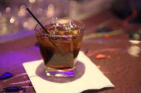

Jack Coke

Description
Jack and Coke is one of the most popular cocktails in the U.S., thanks to the natural friendship that exists between the flavors of Jack Daniels Whiskey and Coca-Cola.
Ingredients
- Ice
- Coca-Cola
- Jack Daniels Whiskey - Old No. 7
Steps
- Sdd some ice to a glass
- Pour 2 ounces of Jack Daniels over the ice
- Add 6 ounces of cola
- Stir and sip!
return to home